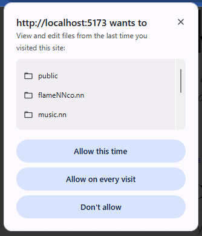

Browser Permissions
Before you can start working with your local files, your browser needs your explicit permission to access
them. This is a standard security feature of modern web browsers to keep your data safe.
Key Benefit: Your data never leaves your computer. We don't upload your files to any cloud.
The browser just acts as a direct bridge between this app and your hard drive.
What to expect
When you select a folder, you will see a popup near the top of your browser window that looks like this:

How to grant access
1
Click "View files" or "Edit files"
Allowing "Edit" access is recommended so that kNNowledge can save changes to your models and notes
automatically.
2
Click "Allow"
Confirm the action to grant the application access to the specific folder you selected.
Privacy & Security
- Access is granted only to the specific folder you select.
- Access is local only. No external servers are involved.
- You can revoke this permission at any time via your browser settings (usually by clicking the icon next
to the URL bar).
Close this tab